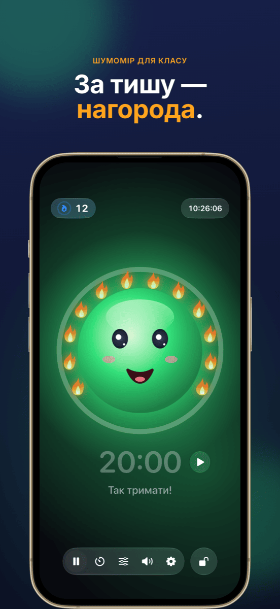
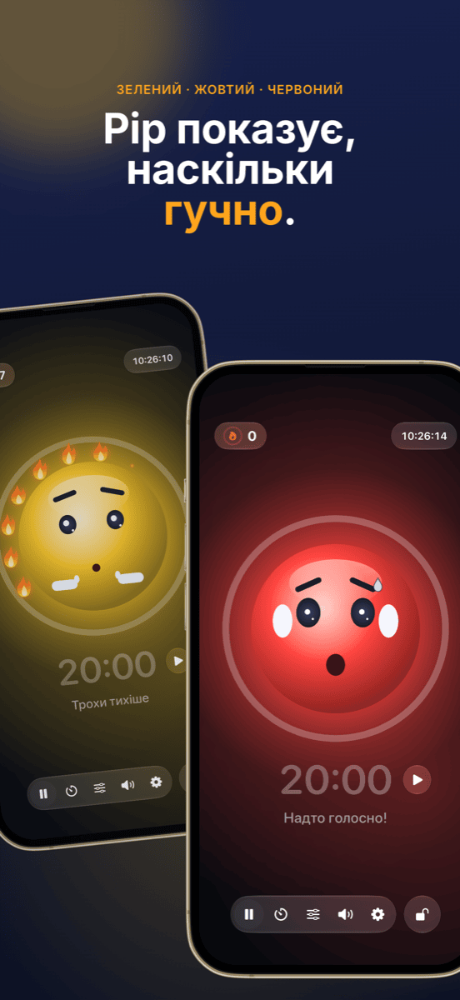
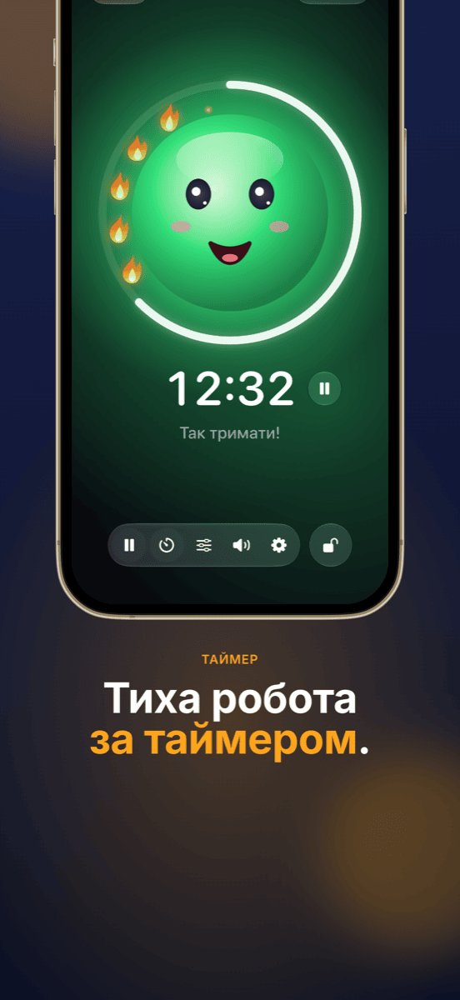
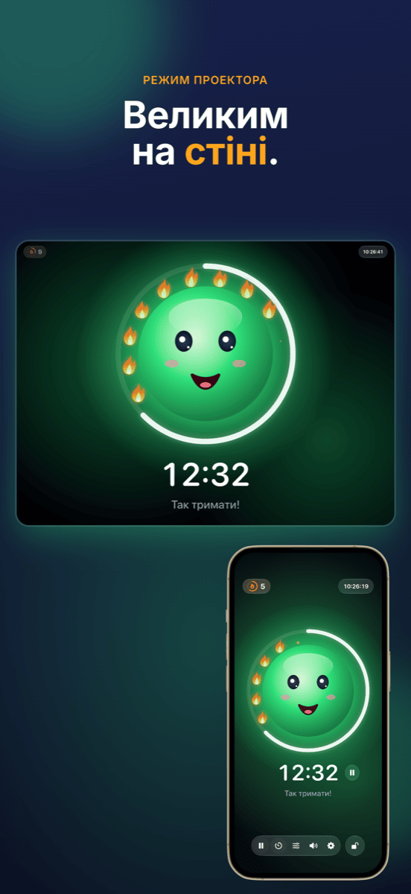
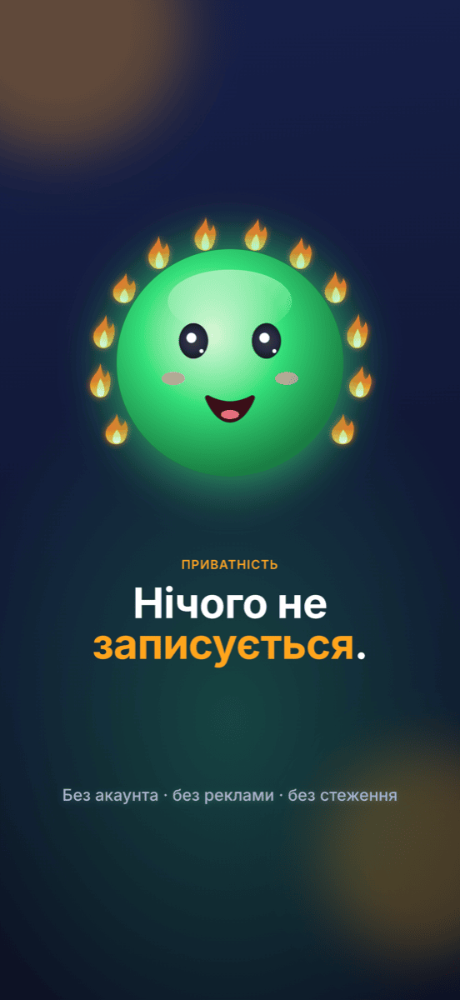

Ruhe
Дружній шумовий світлофор для класу: тиха робота приносить вогники – шум ніколи не карають.
Дружній шумовий світлофор для класу: тиха робота приносить вогники – шум ніколи не карають.





Можливості
Зелений, жовтий, червоний – усміхнене обличчя показує, наскільки в класі гучно. На жовтому воно тихенько каже «тссс», на червоному затуляє вуха.
Поки тихо, вогники загоряються один за одним. Дванадцять вогників утворюють повний вінок – і це святкують. Якщо стає надто гучно, вогники гаснуть.
Кільце навколо талісмана показує, скільки часу лишилося. Старт і стоп – просто поруч із часом; наприкінці вимірювання стає на паузу.
На проекторі чи другому екрані світлофор відображається на весь екран – керування залишається на вашому iPad.
Двома повзунками ви задаєте, коли вмикаються жовтий і червоний, – або Ruhe слухає 5 секунд і налаштовується сам.
Заблоковано за допомогою Face ID або код-пароля, щоб ніхто в класі нічого не змінив.
Як це працює
Відкрийте Ruhe і торкніться обличчя – вимірювання почнеться.
Талісман показує класу, наскільки гучно, і збирає вогники за кожну тиху хвилину.
Наприкінці уроку важить те, що вдалося: вінок із вогників.
Довідка й підтримка
Ruhe потрібен доступ до мікрофона. Дозвольте його в Параметри → Приватність і безпека → Мікрофон → Ruhe.
Торкніться значка повзунків на панелі й пересуньте пороги жовтого та червоного – або скористайтеся «Налаштувати автоматично», поки клас працює як завжди.
Під’єднайте iPad до проектора кабелем або через AirPlay. Ruhe автоматично покаже там світлофор на весь екран, а керування залишиться на iPad.
Торкніться лічильника вогників угорі ліворуч. Там можна виправити кількість вогників або скинути всі до 0. Якщо Ruhe був у фоні понад 10 хвилин, наступний урок і так почнеться з 0.
Ні. Ruhe вимірює лише гучність – нічого не записується, не зберігається й не надсилається. Подробиці – в політиці конфіденційності.
Напишіть на info@crabucate.de – зазвичай я відповідаю протягом одного-двох днів.
Тиша, від якої добре.
Для iPad та iPhone – вже в App Store.